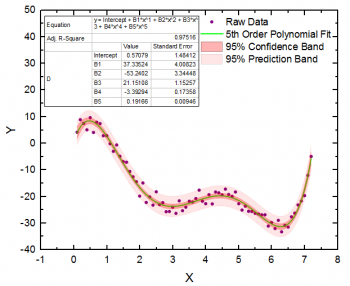

多項式回帰ダイアログボックス
PR-Dialog
多項式フィットは次のモデルに従って計算されます。
y = β0 + β1x + β2x2 + ..+ βnxn
ここで、βn は係数です。

多項式フィットは上記モデルの最大９次項まで、データをフィットすることが出来、切片や傾きを固定してフィットすることも出来ます。
サポート情報
Originの多項式回帰のダイアログボックスは、アクティブなワークシートまたはグラフから開けます。メニューから
- 解析：フィット：多項式フィット（ダイアログを開く...）をクリックします。
関連情報：
再計算
| 再計算
|
ソースデータが変更された場合のフィット結果の再計算の設定
詳細情報は、 分析結果の再計算をご覧下さい。
|
入力
複数データフィットモード
| 複数データフィットモード
|
このオプションは入力データセットが複数ある場合のみ利用できます。
- 入力データセットは別々にフィットされます。レポートは1つのシートに集約されます。
- 入力データセットは別々にフィットされます。レポートは異なるワークシートに出力されます。
- すべての入力データセットは、連結され、1つの曲線としてフィットされます。
|
入力データ
| 範囲
|
入力XYデータ範囲を指定
X
- 曲線のX列
Y
- 曲線のY列
エラー
- Yエラー列
行
- フィットするX列の範囲を指定します。行が行によるまたは Xによるにセットされているとき、開始と終了 のテキストボックスを使って、フィットする範囲を指定します。
-
- フィットするデータセットのすべての行を指定します。
- 行インデックスでX列の範囲を指定します。最終 に 0 と入力すると、入力データ範囲の「最後の行」を指定します。
- X値でX列の範囲を指定します。Xによるの設定では、実際のXの数値の代わりに名前付き範囲を使用できます。詳細は、こちらのOriginLabのブログを参照してください。
- グラフまたはワークシートのどちらかから複数のXYデータセットをフィットするとき、行範囲をすべてに適用 をクリックして、同じX行範囲をすべての入力データに適用します。範囲1の入力列の行範囲を指定し、範囲1の右にある
 ボタンをクリックし、そしてコンテキストメニューから行範囲をすべてに適用を選択します。 ボタンをクリックし、そしてコンテキストメニューから行範囲をすべてに適用を選択します。
詳細情報は、 入力データの指定をご覧下さい。
|
多項式次数
| 多項式次数
|
多項式曲線の次数 (1から9)を指定します。
|
フィット制御
 はi 番目の重み付け係数とします。エラー列のi 番目の行に相当します。Then
はi 番目の重み付け係数とします。エラー列のi 番目の行に相当します。Then^2")

 はエラー列のi 番目の行の値を表します。
すると、次のようになります。
はエラー列のi 番目の行の値を表します。
すると、次のようになります。^2")